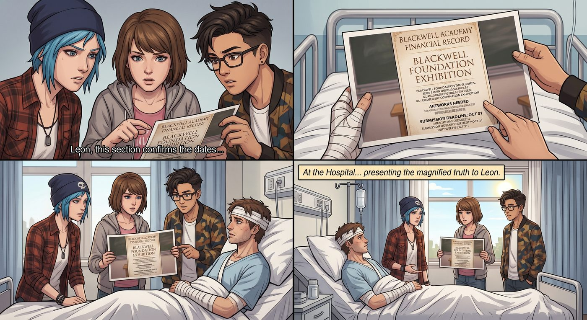

謹慎行事

一、私下的門路
Chloe、Max 和 Kenji 再次來到醫院,這次帶著那張放大處理過的財務文件照片,把整件事的來龍去脈一五一十地告訴了 Leon。
Leon 靠在病床上,聽完整段陳述,神情從一開始的驚訝,漸漸沉澱成一種與年紀不太相符的審慎。
「你們做得對,沒直接交給警局。」他緩緩開口,手指無意識地敲著床邊扶手,「我這幾天躺在床上想了很多——證物室那次入侵,手法太乾淨了,我沒辦法排除內部有問題的可能性。如果我們現在直接把這個丟進正規系統走流程,搞不好還沒等到深入調查,線索就先被神不知鬼不覺地銷毀或洩露出去,反而打草驚蛇。」
「那怎麼辦?」Chloe 問。
「我有個大學同學,」Leon 想了想,「現在在 FBI 金融犯罪那條線做事,權限比我這邊高不少,人也信得過。我私下拜託他幫忙查一下這個帳戶的關聯資訊,不走官方申請流程,低調處理。這樣至少能先確認線索是否有效,再決定下一步怎麼往上呈報。」
三人對視一眼,由衷地佩服起來。
「你這判斷,」Kenji 忍不住開口,「比很多正式辦案的人都謹慎。」
Leon 難得地露出一絲不好意思的表情,撓了撓後腦勺:「其實也沒什麼,」他笑了笑,「我從小跟我爸一起看各種 CSI、犯罪心理那類美劇長大的,他是死忠劇迷,家裡電視常年鎖定那幾個台。耳濡目染久了,腦子裡大概也裝了不少『辦案該注意什麼』的常識,雖然大部分可能只是電視劇瞎編的。」
「至少這次瞎編得挺管用。」Chloe 笑著調侃。
二、拍照速成班(續)
回到校園,暗房速成課還在繼續。這天,Chloe 一邊擺弄相機一邊隨口問:「最近有什麼流行的東西嗎?我想拍點『貼近潮流』的題材,反正 Victoria 那邊肯定又要拿『格調』說事。」
Brooke 和 Warren 對視一眼,異口同聲:「妳不會喜歡的。」
「試試看啊,」Chloe 不服氣,「我沒那麼老古板。」
Kenji 已經默默打開平板,調出幾支短影音——內容五花八門,全是各種毫無邏輯可言的網路挑戰:有人把整顆生洋蔥當蘋果啃、有人邊倒立邊唱歌唱到面紅耳赤、還有一支影片是一群人排成一列,輪流用誇張的表情模仿某種說不清是什麼動物的叫聲,底下留言區一片「笑死」和滿滿的表情符號。
Chloe 盯著螢幕看了足足十秒,一臉生無可戀。
「這是……人類文明的未來?」
「潮流就是這樣,」Kenji 聳肩,語氣一如既往地平淡,「沒有邏輯可言,火了就是火了。」
「那我拍不了,」Chloe 果斷放棄,「這種東西拍出來我自己都尷尬。有沒有別的選項?比較有文化底蘊那種。」
「歷史雕像呢?」她又提議。
「幾年前鎮上那批老雕像,」Max 想了想,「因為年久失修加上一些爭議,好像都已經拆光了,現在原地大概只剩空底座。」
「那博物館?」
Kenji 又調出一份數據,螢幕上是本地博物館最近的訪客流量統計:「節假日期間,外地遊客加上本地 staycation 的人潮,平均排隊時間超過一小時,想找個安靜角度取景基本不可能。」
Chloe 深吸一口氣,眼看又要炸毛。
「那到底要我拍什麼——」
「畫廊怎麼樣?」Max 忽然開口,眼睛一亮,「鎮上那間小型藝廊,平時人不多,而且裡面掛的畫本身就是『被框住的畫面』,如果妳站在畫前面拍,鏡頭裡同時會有畫、畫框、還有妳自己的倒影——某種套娃式的層層構圖,概念上很有意思。」
Chloe 愣了一下,認真琢磨了兩秒,勾起嘴角:「這個聽起來,倒是有點意思。」
「而且,」Max 補充,眼神帶著點狡黠,「保證比生啃洋蔥有格調多了。」
Chloe 白了她一眼,收拾起相機:「行吧,走,去畫廊。」